Sector 7, Phase I, Nerul, Navi Mumbai, Maharashtra 400706
(Under the ambit of D. Y. Patil Deemed to be University)
Department of Computer Engineering
Enterprise Object-Oriented Java & Relational DBMS Architecture
| Student Name: | Anish Vyapari |
| PRN / USN: | DY25ENGU0AIM012 |
| Roll Number: | 25CA1012 |
| Division / Batch: | A / A1 |
| Course: | SBL – OOP Java (Semester 3) |
| Academic Cycle: | 2026 – 2027 |
The Smart Banking Transaction and Account Portfolio Management System (SB-TMS) is an industrial-grade banking platform designed and developed as the final Capstone Project for the Skill Based Laboratory: Object-Oriented Programming in Java course. Evolving directly from SBL OOP Java Experiment 11, SB-TMS expands the fundamental principles of encapsulation, inheritance, polymorphism, abstract contracts, and custom exception handling into an end-to-end, multi-tier enterprise software application.
In classical academic environments, student projects frequently simulate banking systems using transient memory variables or simple arrays. Consequently, state modifications are permanently lost upon process termination, inter-account transfers lack atomicity, and concurrency hazards are ignored. SB-TMS resolves these challenges by introducing:
The following matrix demonstrates how every software engineering concept introduced in Experiment 11 has been rigorously scaled into the final Capstone Project:
| Dimension | Experiment 11 (Baseline) | SB-TMS Capstone (Enterprise Expansion) |
|---|---|---|
| Persistence Engine | Transient in-memory 2D array (String[50][4]). |
Relational SQLite DBMS (sbtms_bank.db) with Foreign Keys, Indexes, and Constraints. |
| Account Hierarchy | Account → SavingsAccount, CurrentAccount. |
Added FixedDepositAccount (compound interest, tenure, premature penalty haircut). |
| Wire Transfer Atomicity | Sequential in-memory deduction and addition. | Full ACID JDBC transaction with setAutoCommit(false) and automatic rollback(). |
| Data Access Architecture | Direct member variable updates. | Data Access Object (DAO) Pattern (AccountDAOImpl) with parameterized PreparedStatements. |
| User Interface | Standard Console Terminal text output. | Modern Responsive Web Dashboard + Passbook Print View + Standalone Interactive CLI. |
| Audit & Security | Basic terminal logging. | Dedicated AUDIT_LOGS table tracking IP, operation codes, timestamps, and status. |
| Deployment & Automation | Manual command line javac / java commands. | 1-Click Windows BAT launcher (run.bat) with automated JDK detection and driver setup. |
SB-TMS implements a clean 5-tier architecture that isolates presentation, routing, domain rules, data access, and storage:
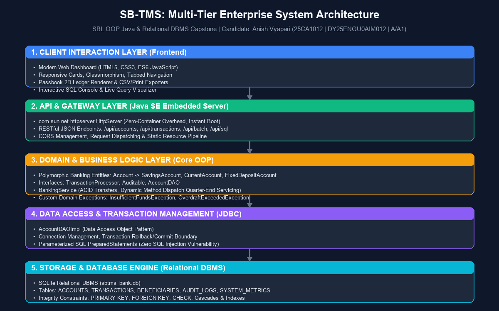
com.sun.net.httpserver.HttpServer. Exposes RESTful endpoints, parses payloads via lightweight JsonHelper, manages CORS, and serves frontend static assets.AccountDAO via AccountDAOImpl, executing parameterized SQL statements to ensure zero SQL injection vulnerabilities and managing transactional boundaries.sbtms_bank.db) with enforced foreign key cascades, unique indexes, and domain check constraints.The domain model embodies the core object-oriented principles mandated by the SBL curriculum:
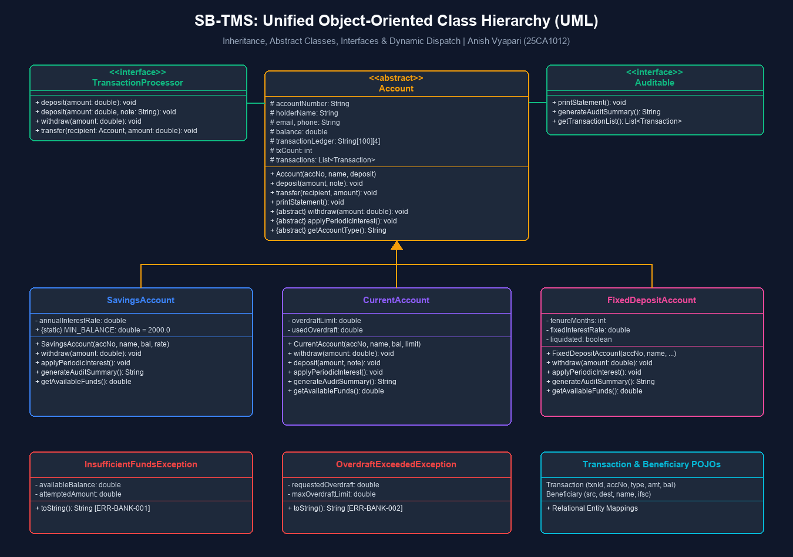
balance, overdraftLimit, usedOverdraft, interestRate) are declared protected or private. State modifications can only occur through controlled public methods that validate business invariants.Account defines common banking state and implements baseline interfaces. Concrete specializations (SavingsAccount, CurrentAccount, FixedDepositAccount) inherit identity properties and reuse base constructors via super(...).Account, SavingsAccount, and CurrentAccount, alongside overloaded deposit methods: deposit(double amount) and deposit(double amount, String referenceNote).applyPeriodicInterest() is overridden across all subclasses. In batch operations, iterating through an Account[] array invokes the specific interest credit or overdraft fee calculation dynamically determined by each object's actual class.TransactionProcessor (transaction behavior), Auditable (passbook and audit generation), and AccountDAO (persistence operations).InsufficientFundsException (ERR-BANK-001): Thrown when a Savings Account withdrawal attempts to breach the Rs. 2,000.00 statutory reserve.OverdraftExceededException (ERR-BANK-002): Thrown when a Current Account commercial withdrawal exceeds the Rs. 50,000.00 overdraft ceiling.To ensure durable persistence and high auditability, SB-TMS maintains a normalized relational schema with five dedicated tables:
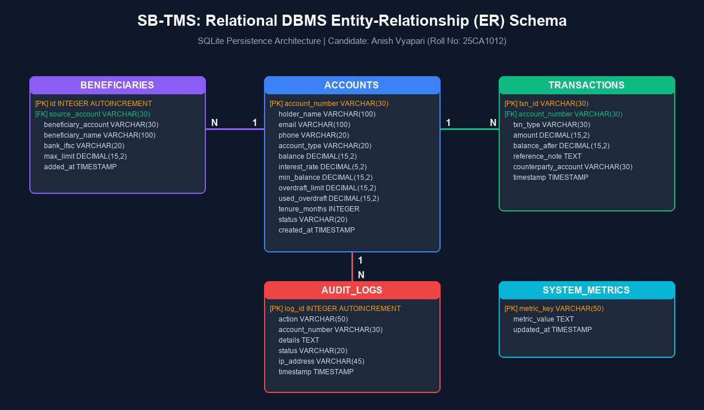
| Table Name | Primary & Foreign Keys | Description & Domain Constraints |
|---|---|---|
| ACCOUNTS | account_number (PK) |
Stores account identity, type (CHECK IN ('SAVINGS','CURRENT','FIXED_DEPOSIT')), balance, interest rate, overdraft limit, and status. |
| TRANSACTIONS | txn_id (PK), account_number (FK) |
Relational ledger recording type (OPEN, DEP, WDL, TRANSFER, INT, OD-LEVY), amount, post-balance, and memo. |
| BENEFICIARIES | id (PK), source_account (FK) |
Pre-registered wire transfer recipients with IFSC codes and maximum per-transaction limits. |
| AUDIT_LOGS | log_id (PK) |
Security trail recording action codes, account references, client IP address, status, and timestamps. |
| SYSTEM_METRICS | metric_key (PK) |
System-level configuration parameters and deployment metadata. |
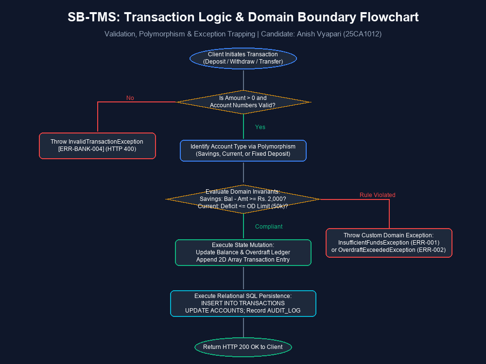
A critical contribution of SB-TMS is its atomic inter-account wire transfer workflow. When a client initiates a funds transfer between two accounts, the operation must execute with total atomicity—either both accounts update and two ledger entries are written, or the entire transaction is rolled back with zero balance change:
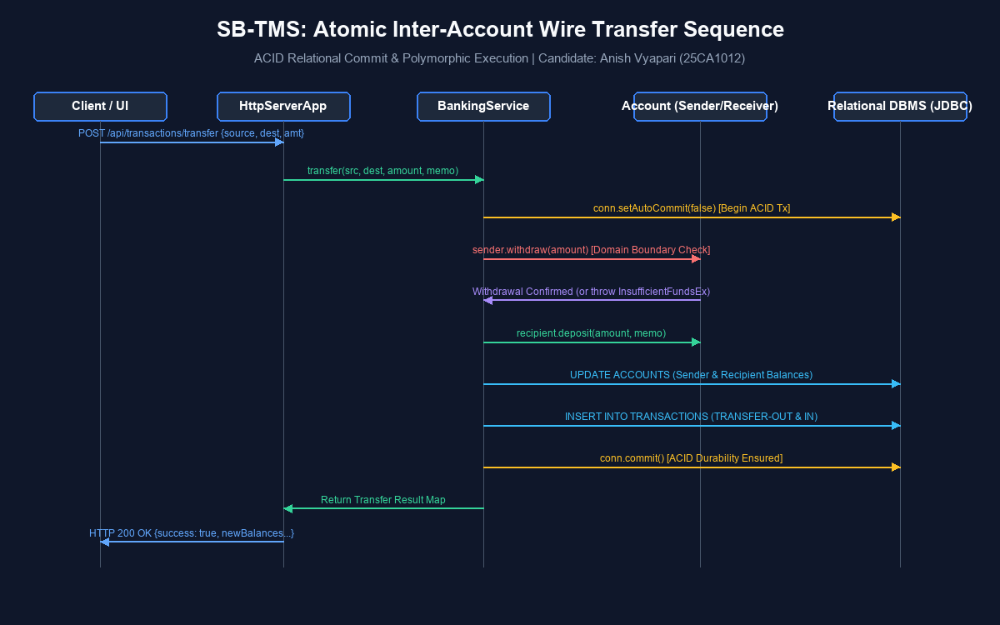
The web interface was constructed with high aesthetic standards, featuring sleek financial cards, glassmorphic containers, crisp typographic hierarchy (Inter font), and rich data visualization. Below are real screenshots captured from the live application:
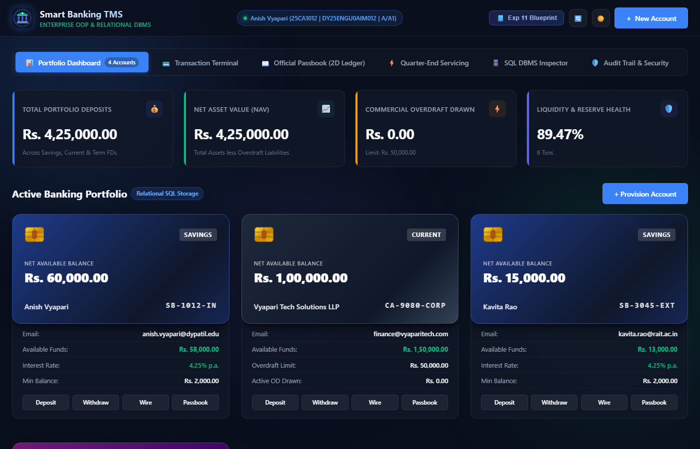
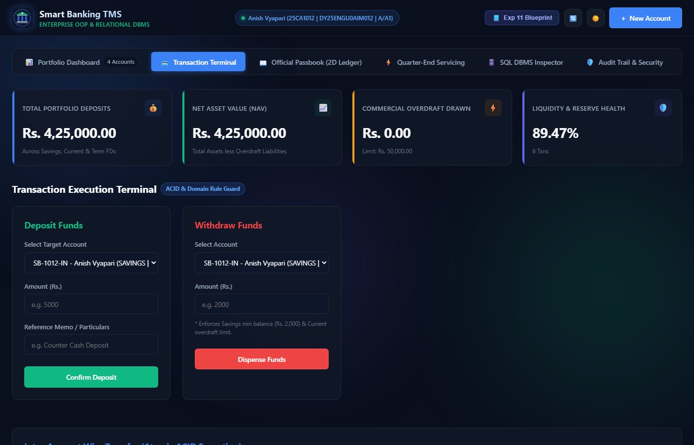
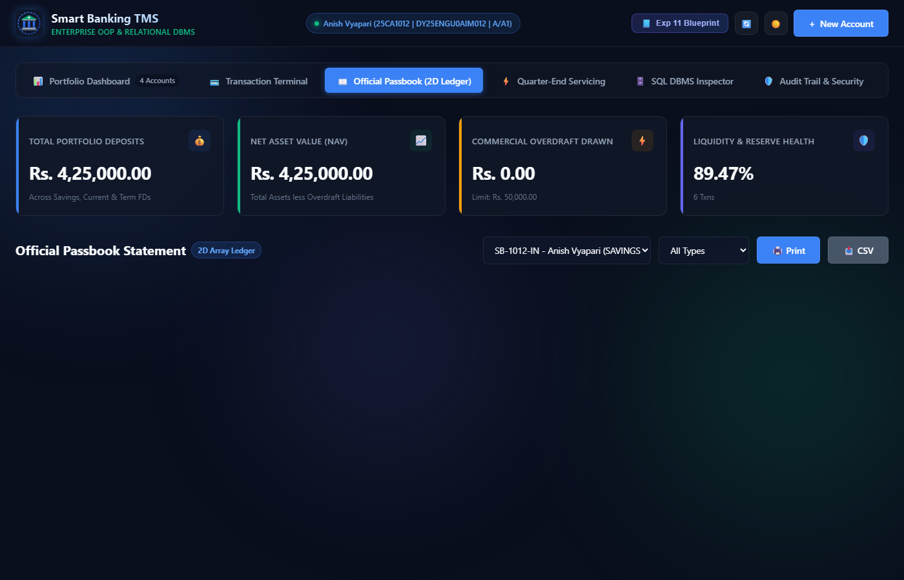
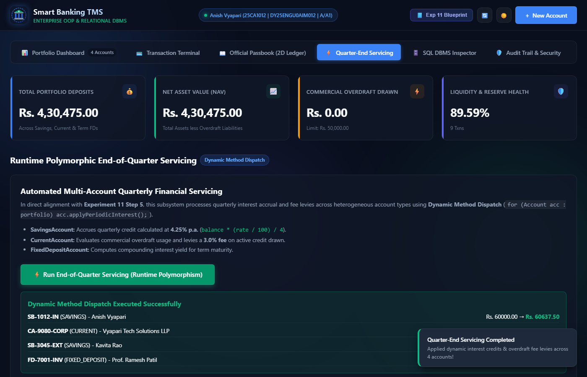
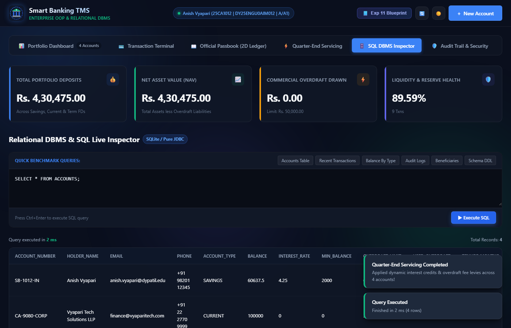
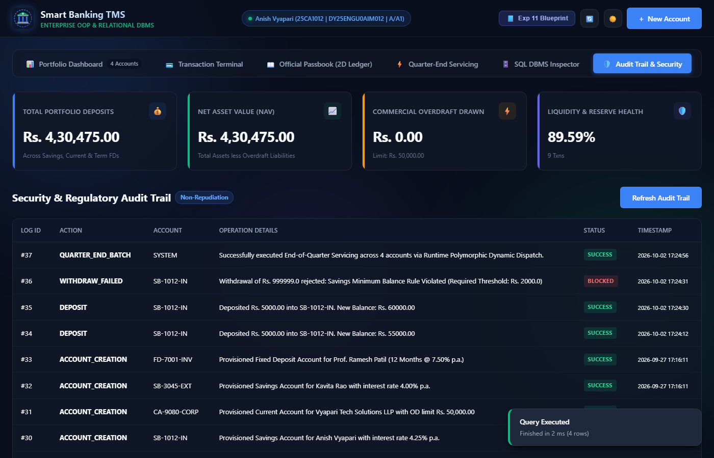
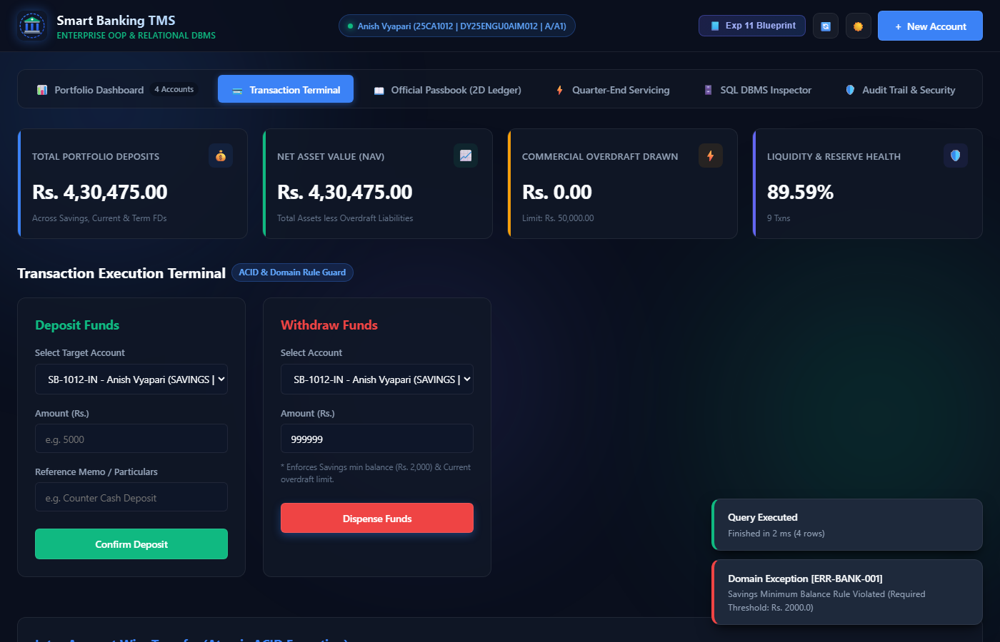
A core requirement of the capstone project is fool-proof portability. The project is packaged with automated batch scripts that enable any professor or evaluator to run the application on a fresh Windows laptop with zero manual configuration.
run.bat: The primary 1-click launcher. Automatically detects Java (OpenJDK 17/21), downloads bundled SQLite JDBC and SLF4J drivers if missing, compiles Java classes, starts the embedded HTTP server on port 8080, and automatically launches the default web browser to http://localhost:8080/index.html.run-cli.bat: Launches the standalone interactive terminal console, replicating the exact sequential demonstration from Experiment 11 (Account provisioning, deposits, withdrawals, wire transfer, exception testing, polymorphic quarter-end servicing, and 2D array passbook statements).setup.bat: Standalone build and compilation utility.stop.bat: Gracefully scans for and terminates background processes listening on port 8080.project folder to any location on a Windows laptop (e.g., Desktop or Downloads).run.bat.SELECT * FROM ACCOUNTS;), and click Execute SQL.InsufficientFundsException error.stop.bat.The Smart Banking Transaction and Account Portfolio Management System (SB-TMS) successfully achieves all academic and engineering goals mandated for the SBL Object-Oriented Programming in Java Capstone. By evolving the foundational concepts of Experiment 11 into a production-ready, multi-tier system with persistent relational DBMS storage, atomic wire transfers, runtime polymorphic servicing, and a modern web interface, the project provides a benchmark demonstration of rigorous software craftsmanship.